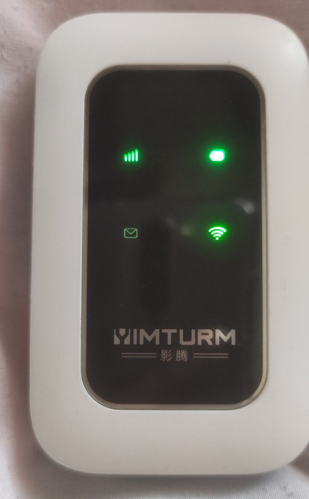
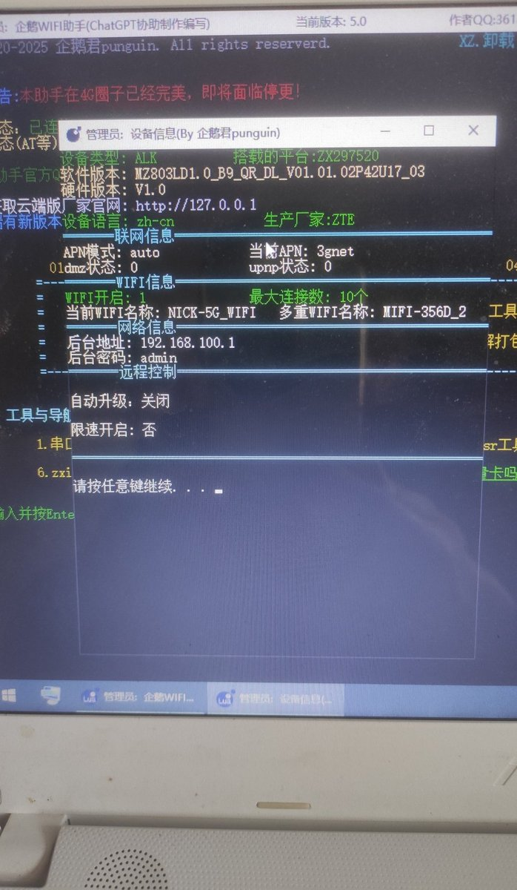

今天下班路上捡到一个电池机影腾随身WiFi设备，吃完饭去B站学习了一下，因为时间长了没折腾现在不会弄了，只好再去学习一下。打开电脑，下载了一些软件，安装驱动，拼接串口，去控，终于成功了。
捡的设备里面有一个联通卡，这个卡其实是丢的人自己插的卡，不是eSIM，我把自己联通卡插上结果没信号，后台登上看了，已经实名认证，余额80多块钱。
没信号那就重新折腾吧，一阵折腾后，插上自己9块8的欧本物联卡，好了，正常了，可以使用了，网速只有4G网速，可以凑合用，速度刷视频很流畅不卡顿。
电池是3500毫安的，设备后面自带卡槽，不用自己去买一个焊接的，总体来说还可以吧。只记得当年折腾那会买了两个海尔的自带卡槽电池机，想当时也折腾了好久如今已经吃灰了，看来已经过了折腾的年纪了。。。
捡的设备里面有一个联通卡，这个卡其实是丢的人自己插的卡，不是eSIM，我把自己联通卡插上结果没信号，后台登上看了，已经实名认证，余额80多块钱。
没信号那就重新折腾吧，一阵折腾后，插上自己9块8的欧本物联卡，好了，正常了，可以使用了，网速只有4G网速，可以凑合用，速度刷视频很流畅不卡顿。
电池是3500毫安的，设备后面自带卡槽，不用自己去买一个焊接的，总体来说还可以吧。只记得当年折腾那会买了两个海尔的自带卡槽电池机，想当时也折腾了好久如今已经吃灰了，看来已经过了折腾的年纪了。。。

